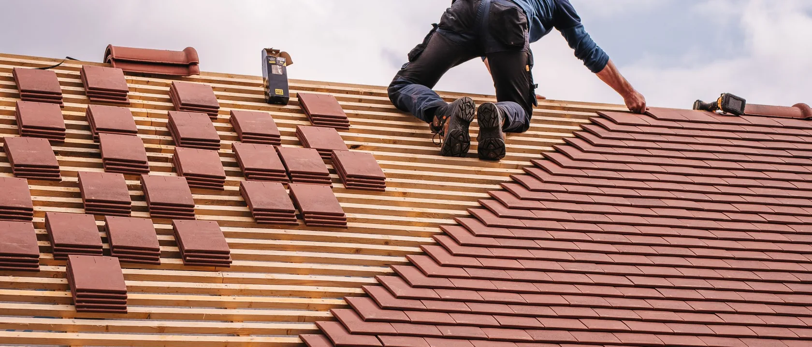
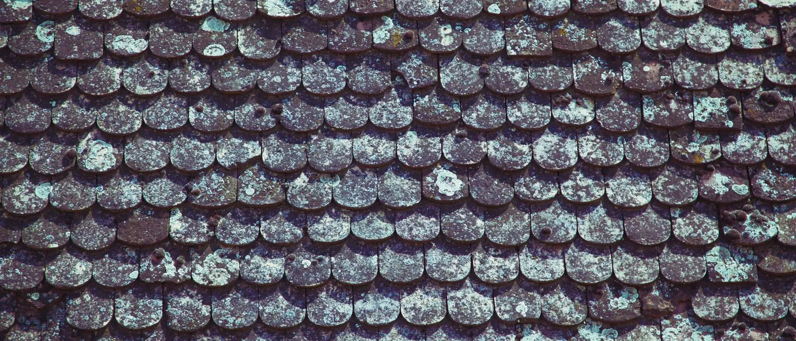
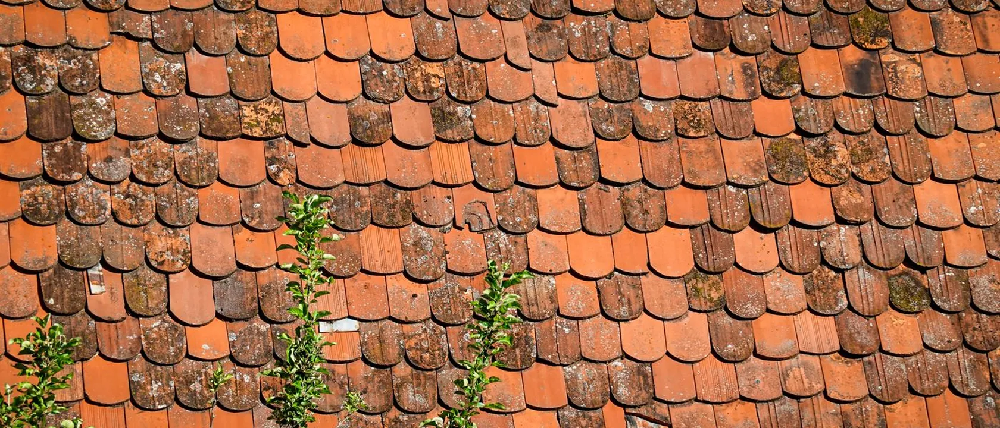
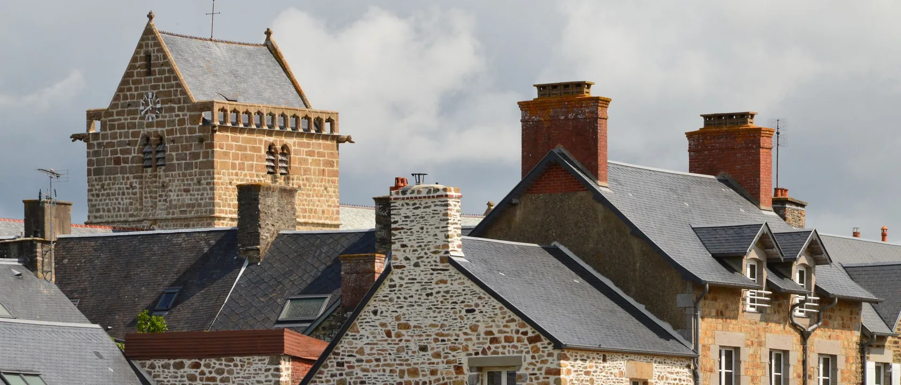
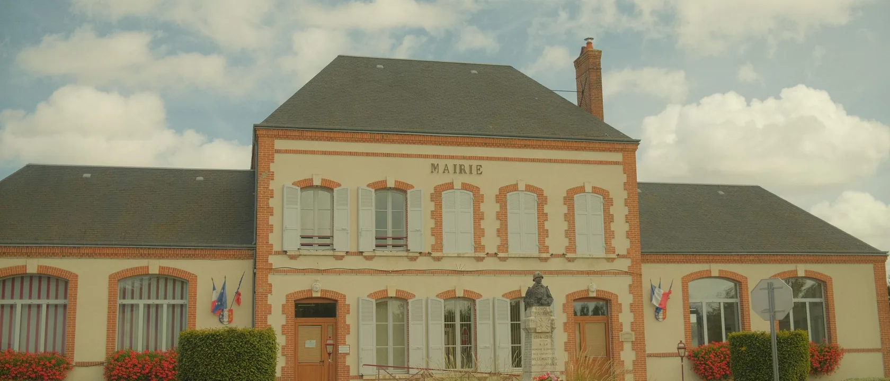
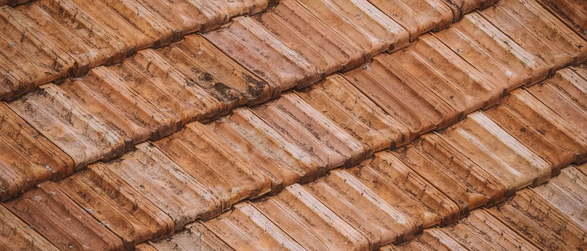
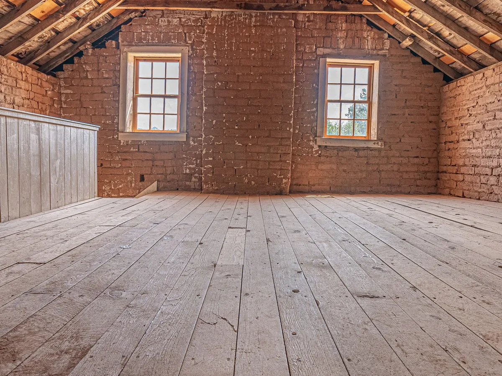
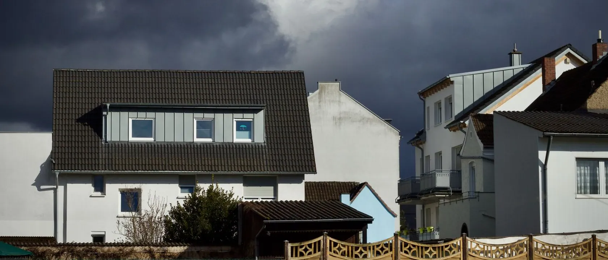
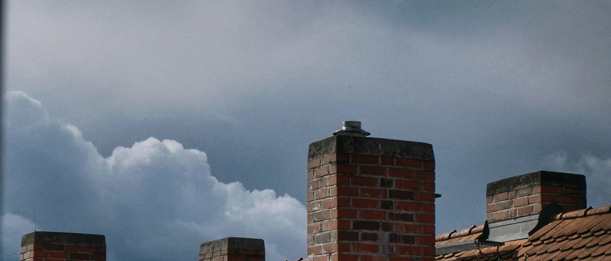
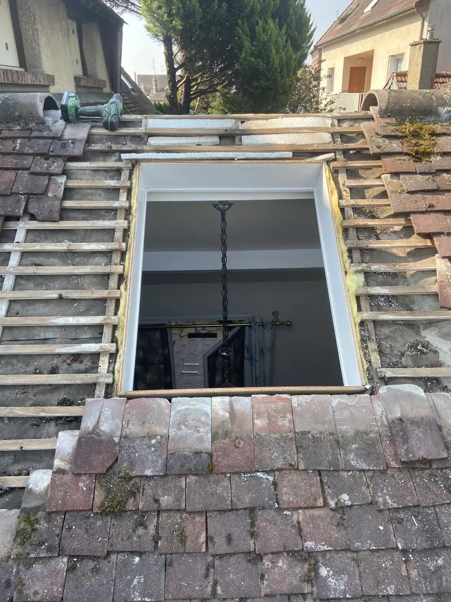

Guides
Comprendre votre toit
avant de signer
Ce que nous expliquons tous les jours en clientèle, écrit noir sur blanc. Sans jargon et sans vendre.
Un devis de toiture est difficile à lire quand on n'est pas du métier, et c'est souvent là que les gens se font avoir : sur une surface annoncée au sol plutôt qu'en rampant, sur un échafaudage oublié, sur une aide promise qui n'existait pas pour ce type de travaux.
Ces guides reprennent ce que nous expliquons chaque semaine chez nos clients. Ils sont écrits par des couvreurs qui montent sur les toits de l'Eure depuis quatorze ans, pas par un rédacteur.

À lire en premier
Prix d'une réfection de toiture
Une réfection de toiture coûte 100 à 300 € le m² de rampant selon les comparateurs. Ce qui fait varier ce prix, et comment comparer deux devis.
Lire le guide








Devis gratuit
Une question sur votre toit ?
Décrivez la situation en deux lignes, nous rappelons pour fixer une visite.
- Téléphone06 24 59 26 77
- AtelierRoute de Saint-Remy, 27320 Nonancourt
- HorairesTous les jours, 8 h à 21 h
Dépannage 24 h/24